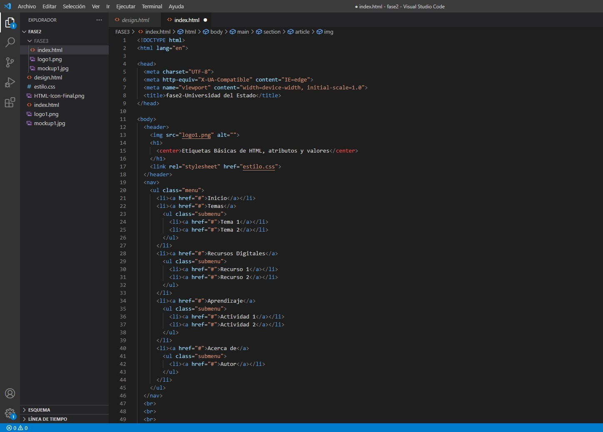
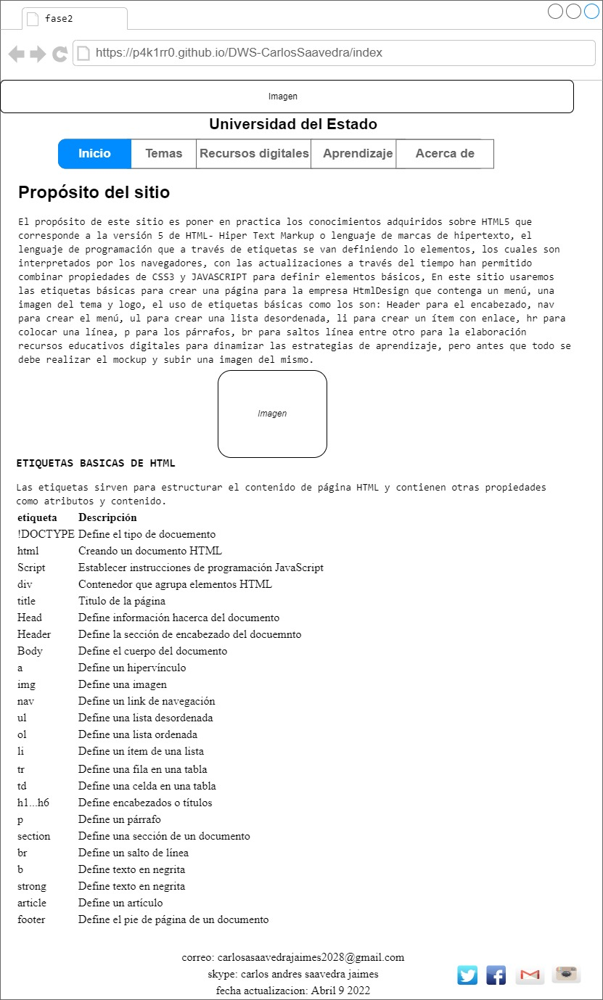

Propósito del sitio
El proposito de este sitio es poner en practica los conocimientos adquiridos sobre HTML5 que
corresponde a la
version 5 de HTML- Hiper Text Markup o lenguaje de marcas de hipertexto,
el lenguaje de programación que a traves de etiquetas se van definiendo los elementos, los cuales son
interpretados
por los navegadores, con las actualizaciones a traves del tiempo han
permitido combinar propiedades de CSS3 y JAVASCRIPT para definir elementos básicos, En este sitio usaremos las
etiquetas básicas para crear una página para la empresa HtmlDesign que contenga un menu,
una imagen del tema y logo, el uso de etiquetas básicas como los son: Header para el emcabezado, nav para
crear el
menu, ul para crear una lista desordenada, li para crear un item con enlace, hr para
colocar una línea, p para los párrafos, br para saltos línea entre otro para la elaboración recursos
educativos
digitales para dinamizar las estrategias de aprendizaje, pero antes que todo se debe
realizar el mockup y subir una imagen del mismo.

¿QUÉ ES UN ATRIBUTO HTML?
Un atributo HTML es un valor o propiedad que añades a una etiqueta HTML. Este
otorgará una propiedad o comportamiento específico a la propia etiqueta, por lo que es muy importante que los
conozcas todos.
CLASES DE ATRIBUTOS HTML
Existen diferentes tipos de atributos para las etiquetas. Algunos son de ámbito global,
mientras que otros son
más específicos y solo son válidos para algunas etiquetas HTML. En general podemos ordenarlos de la siguiente
manera:
Aunque cada una de las etiquetas HTML define sus propios atributos, encontramos algunos comunes a muchas o
casi
todas las etiquetas, que se dividen en cuatro grupos según su funcionalidad:
º Atributos básicos
º Atributos de internacionalización
º Atributos de eventos
º Atributos de foco
ATRIBUTOS BÁSICOS
Los atributos básicos se utilizan en la mayoría de etiquetas HTML y XHTML, aunque adquieren mayor sentido
cuando
se utilizan hojas de estilo en cascada (CSS):
id="texto" Establece un indicador único a cada elemento
class="texto" Establece la clase CSS que se aplica a los estilos del elemento
style="texto" Aplica de forma directa los estilos CSS de un elemento
title="texto" Establece el título del elemento (Mejora la accesibilidad)
ATRIBUTOS DE INTERNACIONALIZACIÓN O I18N
Estos atributos se utilizan en aquellas páginas que muestran sus contenidos en varios idiomas y las que
quieran
indicar de forma explícita el idioma de sus contenidos:
lang="codigo" Indica el idioma del elemento
xml:lang="codigo" Indica el idioma del elemento, aunque tiene más prioridad que el atributo anterior y es
obligatorio si se incluye el atributo lang
dir: Indica la dirección del texto
ATRIBUTOS DE EVENTOS
Estos atributos se utilizan en las páginas web que incluyen código JavaScript para realizar acciones dinámicas
sobre los elementos de la página.
Pueden ser utilizados por: todos los elementos
onclick Ejecuta la acción cuando se realiza un clic sobre el elemento
ondblclick Ejecuta la acción cuando se realiza un doble clic sobre el elemento
onmousedown Ejecuta la acción cuando se detecta el botón pulsado del ratón
onmouseup Ejecuta la acción cuando se detecta que se ha soltado el botón del ratón
onmousemove Ejecuta la acción cuando se detecta el movimiento del ratón sobre el elemento
onmouseout Ejecuta la acción cuando el ratón abandona el elemento
onmouseover Ejecuta la acción cuando se detecta que el ratón se sitúa sobre el elemento
Pueden ser utilizados por: body
onload Ejecuta la acción cuando se carga el documento
onunload Ejecuta la acción cuando se abandona el documento
onresize Ejecuta la acción cuando se ha modificado el tamaño de la ventana del navegador
Pueden ser utilizados por: elementos de formulario y body
onkeydown Ejecuta la acción cuando se detecta que la tecla esta pulsada
onkeyup Ejecuta la acción cuando se detecta que se ha soltado la tecla pulsada
onkeypress Ejecuta la acción cuando se pulsa una tecla
Pueden ser utilizados por: varios
Elementos que pueden usarlo
onblur Ejecuta la acción cuando el elemento pierde el foco bien sea a través del ratón o por navegación
tabulada button, input, label, select, textarea, body
onfocus Ejecuta la acción cuando el elemento obtiene el foco bien sea a través del ratón o por navegación
tabulada
button, input, label, select, textarea, body
onchange Ejecuta la acción cuando el valor de un control ha sido modificado input, select, textarea
onreset Ejecuta la acción cuando el formulario es restablecido a sus valores por defecto form
onselect Ejecuta la acción cuando un usuario selecciona texto en un campo de texto input, textarea
onsubmit Ejecuta la acción cuando el formulario es enviado form
ATRIBUTOS DE FOCO
Se le denomina foco o focus, cuando un control o elemento del documento ha sido seleccionado. Cuando ese
elemento deja
de estar seleccionado, "pierde el foco" y es el nuevo elemento seleccionado el que se dice que tiene "el
foco".
accesskey="letra" Establece una tecla de acceso rápido a un elemento HTML
tabindex="numero" Establece la posición del elemento en el orden de tabulación de la página (valor entre 0 y
32.767)
onfocus, onblur Controlan los eventos JavaScript que se ejecutan cuando el elemento obtiene o pierde el foco
Mi Mockup
